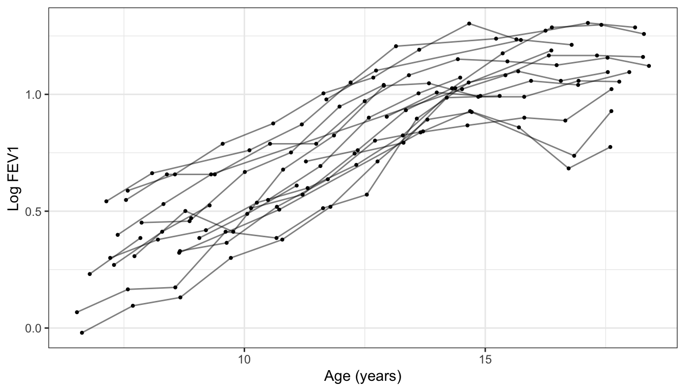
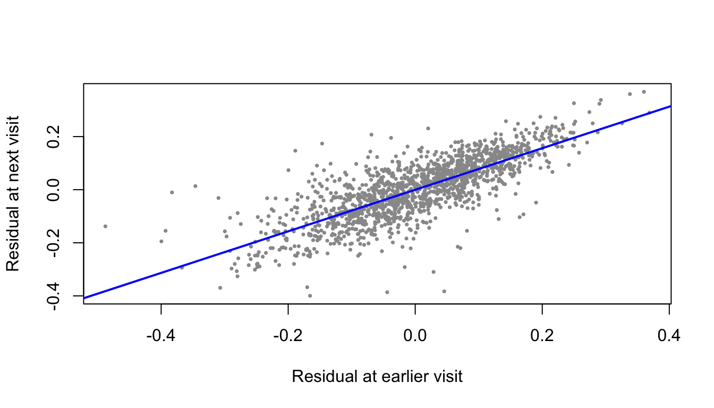
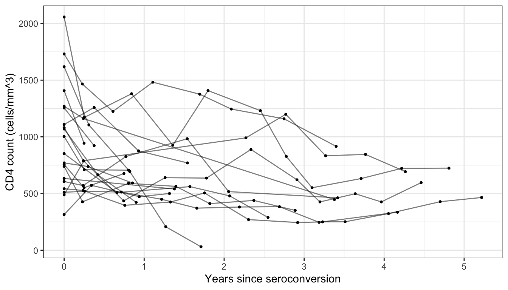

Positive within-person correlation reduces the variance of a difference, but increases the variance of an average relative to averaging independent measurements.
(b) Measurement cost of $500; no enrollment cost
There are \(300{,}000/500=600\) available measurements. The cross-sectional design enrolls 600 people (300 per treatment). Each longitudinal design enrolls 300 people: 150 per treatment in designs (ii) and (iv), or all 300 receiving both treatments in design (iii).
The table reports \(\operatorname{Var}(\widehat\gamma)/\sigma^2\); multiply each entry by \(\sigma^2\) for the variance itself.
variance_table <-function(K_cross, K_long) { rho <-c(.2, .5, .8)data.frame(rho = rho,`Cross-sectional`=rep(4/ K_cross, 3),`Change from baseline`=8* (1- rho) / K_long,Crossover =2* (1- rho) / K_long,`Average of two`=2* (1+ rho) / K_long,check.names =FALSE )}var_b <-variance_table(600, 300)knitr::kable(var_b, digits =6,caption ="(b) Variance as a multiple of sigma-squared.")
(b) Variance as a multiple of sigma-squared.
rho
Cross-sectional
Change from baseline
Crossover
Average of two
0.2
0.006667
0.021333
0.005333
0.008
0.5
0.006667
0.013333
0.003333
0.010
0.8
0.006667
0.005333
0.001333
0.012
At \(\rho=0.2\), crossover minimizes variance (0.005333\(\sigma^2\)), followed by cross-sectional, averages, and changes. At \(\rho=0.5\), crossover again wins (0.003333\(\sigma^2\)); cross-sectional is next, then averages, then changes. At \(\rho=0.8\), crossover wins (0.001333\(\sigma^2\)), followed by changes, cross-sectional, and averages. Under this budget, change scores improve on the cross-sectional design only when \(\rho>0.75\).
(c) Enrollment cost of $250 plus $250 per measurement
A cross-sectional participant costs \(250+250=500\), so 600 people (300 per treatment) can be enrolled. A longitudinal participant costs \(250+2(250)=750\), so 400 people can be enrolled: 200 per treatment in designs (ii) and (iv), or all 400 receiving both treatments in design (iii).
var_c <-variance_table(600, 400)knitr::kable(var_c, digits =6,caption ="(c) Variance as a multiple of sigma-squared.")
At \(\rho=0.2\), crossover minimizes variance (0.004000\(\sigma^2\)), followed by averages, cross-sectional, and changes. At \(\rho=0.5\), crossover wins (0.002500\(\sigma^2\)), followed by cross-sectional, averages, and changes. At \(\rho=0.8\), crossover wins (0.001000\(\sigma^2\)), followed by changes, cross-sectional, and averages. Changes improve on cross-sectional sampling when \(\rho>2/3\); averages improve on it when \(\rho<1/3\).
I would choose the crossover design for all three correlations under either budget because it has the smallest variance. This assumes no carryover or period effects. Otherwise, receiving A first and B second could mix up the treatment effect with a time effect.
If crossover is not possible, I would choose cross-sectional sampling at \(\rho=0.2,0.5\) and changes at \(\rho=0.8\) in (b). In (c), I would choose averages at \(\rho=0.2\), cross-sectional sampling at \(\rho=0.5\), and changes at \(\rho=0.8\).
Question 2
(a) Exploratory data analysis
First, I checked the number of girls, the number of visits, and missing values.
Min. 1st Qu. Median Mean 3rd Qu. Max.
1.000 3.000 7.000 6.647 10.000 12.000
There are 300 girls and 1,994 observations. Each girl has between 1 and 12 visits, and 48 girls have only one visit. There are no missing values or duplicate ID-age pairs. However, having no missing entries does not mean that every girl attended every planned visit. Since girls have different numbers of visits, I would use a method that allows unequal follow-up. Girls with one visit can help describe lung function levels, but not changes within a girl.
FEV1 generally increases with age and height. The age curve starts to level off in the later teenage years, so a straight line may not describe the whole age range well. I would consider a curved age effect and include height when modeling lung function. Since age and height are related, their effects should be interpreted together.
set.seed(8157)selected_ids <-sample(unique(topeka$id), 20)plot_data <-subset(topeka, id %in% selected_ids)ggplot(plot_data, aes(age, log.FEV1, group = id)) +geom_line(alpha = .5) +geom_point(size = .7) +labs(x ="Age (years)", y ="Log FEV1")

Log FEV1 over time for 20 randomly selected girls.
Most girls show increasing lung function, but their starting levels and patterns of growth differ. Some also have decreases between visits. This suggests allowing girls to have different starting levels and possibly different growth rates.
Outliers
I used a simple curved mean model to look for observations that are unusual for a girl’s age and height. This model is just an EDA tool.
mean_model <-lm(log.FEV1 ~ age +I(age^2) + height, data = topeka)topeka$residual <-residuals(mean_model)topeka$std_residual <-rstandard(mean_model)# Show the five largest residuals in absolute value.unusual <-order(abs(topeka$std_residual), decreasing =TRUE)[1:5]knitr::kable(topeka[unusual,c("id", "age", "height", "FEV1", "std_residual")],digits =3, row.names =FALSE)
id
age
height
FEV1
std_residual
197
9.136
1.22
0.50
-8.546
246
14.579
1.62
1.76
-4.193
118
13.202
1.59
1.78
-3.435
32
8.274
1.32
1.05
-3.380
131
18.259
1.72
2.47
-3.326
Girl 197 has a particularly low FEV1 of about 0.50 L at age 9.14. I would check this measurement against the original record before deciding whether it is an error. I would not remove an observation only because it is unusual. Also, a negative log FEV1 is possible when FEV1 is below 1 L.
Dependence structure
To look at dependence, I compared residuals from consecutive observed visits within each girl. Removing the age and height trend first helps avoid mistaking average growth for correlation.
previous <-c()current <-c()time_gap <-c()for (girl inunique(topeka$id)) { d <-subset(topeka, id == girl) n <-nrow(d)if (n >=2) { previous <-c(previous, d$residual[1:(n -1)]) current <-c(current, d$residual[2:n]) time_gap <-c(time_gap, diff(d$age)) }}# Restrict to approximately annual pairs for a comparable time gap.annual <- time_gap >= .5& time_gap <=1.5annual_cor <-cor(previous[annual], current[annual])data.frame(Pairs =sum(annual), Residual_correlation =round(annual_cor, 3))
Pairs Residual_correlation
1 1566 0.785
plot(previous[annual], current[annual], pch =16, cex = .5,col ="gray60", xlab ="Residual at earlier visit",ylab ="Residual at next visit")abline(lm(current[annual] ~ previous[annual]), col ="blue", lwd =2)

The residual correlation for visits about one year apart is 0.79. This shows that measurements from the same girl are positively related even after adjusting for age and height. I would account for within-girl correlation, for example with a random-intercept model, rather than treating all visits as independent. This is a descriptive correlation; the pairs themselves are not independent, and it does not tell us the correlation at every time gap.
(b) Questions we could study
How does lung function change as girls get older, and when does growth slow down?
Do girls differ in their starting lung function and rates of growth?
Is an increase in a girl’s height associated with an increase in her lung function?
Does a girl’s earlier lung function help predict her later lung function?
This dataset only includes girls from Topeka and does not include pollution measurements. Therefore, it cannot directly answer questions about differences between cities, boys and girls, or pollution effects.
(c) What if there were only baseline measurements?
With one measurement per girl, we could compare FEV1 between girls of different ages or heights. However, an age difference between two girls is not necessarily the same as a change within one girl. Interpreting the cross-sectional age pattern as growth would require assuming that girls of different ages are otherwise comparable, including their birth cohorts and selection into the study. Baseline ages also cover less of adolescence than all follow-up visits.
We could describe differences in lung function levels, but we could not estimate individual growth rates or their variation. We could study the association between height and FEV1 across girls, but not the association between changes in height and FEV1 within a girl. Finally, without later measurements, we could not estimate within-girl correlation or check how well baseline lung function predicts future lung function.
Question 3
(a) Baseline Table 1
I kept participants with a measurement within six months before seroconversion and at least one measurement afterward. For baseline, I used the last pre-seroconversion visit and treated its time as zero. Follow-up visits keep their recorded time since seroconversion.
macs <- macs[order(macs$id, macs$time), ]baseline <-data.frame()followup <-data.frame()for (person inunique(macs$id)) { d <-subset(macs, id == person) before <-subset(d, time >=-.5& time <0) after <-subset(d, time >0)if (nrow(before) >0&&nrow(after) >0) { b <- before[which.max(before$time), ] baseline <-rbind(baseline, b) b$time <-0 followup <-rbind(followup, b, after) }}nrow(baseline)
The final sample contains 266 participants, with no missing baseline covariates. The mean baseline CD4 count is 998.9 cells/mm\(^3\).
I kept the variable coding from the data. Age includes negative values, so I report it on the supplied scale rather than assuming it is actual age in years. I treat packs as categories, with code 0 as the reference, and drug as binary. I use partners and cesd as numeric variables. Without the class codebook, I cannot give exact labels for the smoking categories or confirm whether the partners score is capped.
The intercept estimates the CD4 level at time zero, and the slope estimates the change per year. I chose a linear model because it is easy to interpret and some participants only have two measurements.
individual_results <-data.frame()for (person inunique(followup$id)) { d <-subset(followup, id == person) fit <-lm(cd4 ~ time, data = d) individual_results <-rbind(individual_results, data.frame(id = person,intercept =unname(coef(fit)[1]),slope =unname(coef(fit)[2]),visits =nrow(d),last_time =max(d$time)))}knitr::kable(data.frame(Quantity =c("Intercept", "Annual change"),Mean =c(mean(individual_results$intercept), mean(individual_results$slope)),SD =c(sd(individual_results$intercept), sd(individual_results$slope)),Median =c(median(individual_results$intercept), median(individual_results$slope))),digits =1)
Quantity
Mean
SD
Median
Intercept
905.8
330.3
846.8
Annual change
-293.4
504.6
-141.7
The mean slope is -293.4 cells/mm\(^3\) per year, and the median is -141.7. Both suggest decreasing CD4 counts. The mean is more negative because some participants have very steep estimated declines.
set.seed(8157)selected_ids <-sample(unique(followup$id), 20)ggplot(subset(followup, id %in% selected_ids),aes(time, cd4, group = id)) +geom_line(alpha = .5) +geom_point(size = .7) +labs(x ="Years since seroconversion", y ="CD4 count (cells/mm^3)")

CD4 trajectories for 20 randomly selected participants.
Stage 2
Next, I used baseline age, smoking category, drug code, partners, and CES-D to predict the estimated intercepts and slopes. Each participant contributes one row to these regressions. I did not include baseline CD4 as a predictor because it was already used to estimate the intercept and slope.
results <-merge(baseline, individual_results, by ="id")results$packs <-factor(results$packs)results$drug <-factor(results$drug)intercept_model <-lm(intercept ~ age + packs + drug + partners + cesd,data = results)slope_model <-lm(slope ~ age + packs + drug + partners + cesd,data = results)# Ordinary least squares estimates and confidence intervalsintercept_table <-cbind(summary(intercept_model)$coefficients,confint(intercept_model))slope_table <-cbind(summary(slope_model)$coefficients,confint(slope_model))knitr::kable(intercept_table, digits =3,caption ="Baseline predictors of the fitted CD4 intercept.")
Baseline predictors of the fitted CD4 intercept.
Estimate
Std. Error
t value
Pr(>|t|)
2.5 %
97.5 %
(Intercept)
798.096
57.956
13.771
0.000
683.967
912.224
age
2.654
2.635
1.007
0.315
-2.536
7.843
packs1
-76.160
94.054
-0.810
0.419
-261.375
109.055
packs2
152.466
80.219
1.901
0.058
-5.504
310.436
packs3
319.687
47.503
6.730
0.000
226.142
413.232
packs4
143.637
66.454
2.161
0.032
12.774
274.500
drug1
113.708
49.923
2.278
0.024
15.398
212.019
partners
-8.375
5.436
-1.541
0.125
-19.080
2.330
cesd
-2.101
1.882
-1.116
0.265
-5.806
1.604
knitr::kable(slope_table, digits =3,caption ="Baseline predictors of the fitted annual CD4 change.")
Baseline predictors of the fitted annual CD4 change.
Estimate
Std. Error
t value
Pr(>|t|)
2.5 %
97.5 %
(Intercept)
-272.297
97.139
-2.803
0.005
-463.587
-81.007
age
-3.094
4.417
-0.700
0.484
-11.792
5.604
packs1
221.629
157.644
1.406
0.161
-88.809
532.066
packs2
-120.886
134.454
-0.899
0.369
-385.658
143.886
packs3
-117.525
79.620
-1.476
0.141
-274.315
39.265
packs4
118.338
111.382
1.062
0.289
-101.000
337.677
drug1
-62.248
83.676
-0.744
0.458
-227.026
102.530
partners
2.671
9.111
0.293
0.770
-15.271
20.613
cesd
3.041
3.154
0.964
0.336
-3.169
9.251
In the intercept model, smoking codes 3 and 4 and drug code 1 are associated with higher fitted CD4 levels than their reference groups, holding the other variables fixed (\(p<0.05\)). For example, the estimate for smoking code 3 is about 319.7 cells/mm\(^3\) higher than code 0. Age, partners, CES-D, and the other smoking categories do not have clear associations at the 0.05 level in this model.
In the slope model, none of the individual baseline covariates has a \(p\)-value below 0.05 using the usual least squares standard errors. The model explains only 3.5% of the variation in slopes. Thus, these baseline variables do not explain much of the difference in estimated decline between participants. This does not prove that there are no associations.
A limitation of this analysis
The usual regression confidence intervals assume independent participants and equal error variance in stage 2. However, slopes based on short follow-up or few visits can be much less precise. There are 35 participants with only two measurements, so I would treat these intervals and \(p\)-values as approximate.
# Check how much short follow-up affects the average slope.longer_followup <-subset(results, visits >=3& last_time >=1)knitr::kable(data.frame(Sample =c("All participants", "At least 3 visits and 1 year of follow-up"),N =c(nrow(results), nrow(longer_followup)),Mean_slope =c(mean(results$slope), mean(longer_followup$slope)),Median_slope =c(median(results$slope), median(longer_followup$slope))),digits =1)
Sample
N
Mean_slope
Median_slope
All participants
266
-293.4
-141.7
At least 3 visits and 1 year of follow-up
214
-155.6
-120.4
The average decline is smaller when restricted to participants with more follow-up, although the median still shows a decline. This suggests that the size of the mean slope is affected by short follow-up. I kept all 266 participants in the main analysis because excluding people also changes the sample.
Summary for a collaborator
CD4 counts generally decreased after seroconversion. About 92.5% of participants had a downward fitted trend, and the median decline was about 142 cells/mm\(^3\) per year. Some baseline characteristics were related to CD4 levels near seroconversion, but they explained little of the variation in the rate of decline. The exact average rate should be interpreted carefully because participants with short follow-up had some extreme estimates. These are associations, not evidence that a baseline characteristic causes CD4 changes.